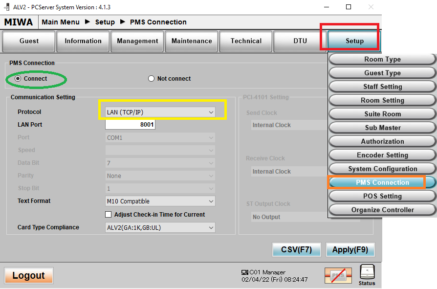
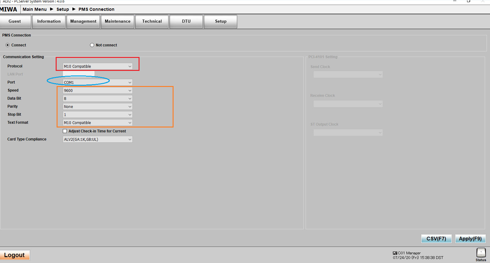

Contact Phone # 949-328-5280
9272 Jeronimo Road, Irvine CA 92618
Technical Support Website V1.63 (automated G.RNCN)
Frequently Asked Questions for ALV2 Locks:
---LOCK (Guest and Common Door) RELATED QUESTIONS---
L0) New Custumer's Guide to Using Miwa Door Locks
Basic instructions for Wide ALV2 Locks
L1) How to Reprogram a lock as a guest or common door?
TABLET DTU:
*Double click the DTU Icon and select yes on allowing changes
*Make Sure the Date/Time is Correct in the upper right hand corner before reprogramming
*To Exit the DTU Software:
From Main Menu, Select Setup DTU, select Exit
(Selecting Bye will not exit the software!)
With DTU Software Open –
Sign in w/ Staff Code
a.) Select IrDA (skip if it doesn’t ask you)
b.) on Main Menu select Lock Initialization
c.) select Guest Door
d.) Set the Room No., Set Floor No. and press confirm (bottom right)
e.) Use DTU card against door and put away, light should be orange, Lock can only be programmed with Orange Light Is On
f.) Aim DTU Tablet and press send
*If you have the P-Type (Wide) locks, aim at the Upper Right corner (3-4 inches away) as shown in the picture
*If you have the Slim Type locks, aim at the Center (3-4 inches away)
*If you have a wall reader (square matte black box), aim at the center
With DTU Software Open—
Sign in w/ Staff Code
a.) Select IrDA (skip if it doesn’t ask you)
b.) on Main Menu select Lock Initialization
c.) select Common Door
d.) Set the Room No (Room # is not important w/ common doors)
e.) Set the Room Range (Hotel’s Lowest Room# to Highest Room#), Then Press Confirm
f.) If you want guests to only be able to use during certain hours, i.e. gym/pool door, enter Guest Start/End Time using military time.
f2.) If you want to door to stay unlocked and not require a key card during certain hours, scroll down, go to Auto Time Zone and set the start and end hours military time
g.) Use DTU card against door should light Orange and put away card, Lock can only be programmed with Orange Light Is On
h.) Aim DTU Tablet and press send
*If you have the P-Type (Wide) locks, aim at the Upper Right corner (3-4 inches away) as shown in the picture
*If you have the Slim Type locks, aim at the Center (3-4 inches away)
*If you have a wall reader (square matte black box), aim at the center
Note: If you want to disable guests and only allow staff to enter a room:
Program it as a common door, but on step f, change the guest start to 00:00 and guest end to 00:01
If you lost your DTU Card- you can make a new one from the Front Desk ALV2 PC Server
Log in as a manager, and click on Management, click on the DTU Card.
Make sure the Duplicate box is Checked, and issue the card.
You'll have to use a management key
KEYPAD DTU:
*Before Programming- Check the date/time by turning on, enter staff code/password, Press 1 (R/C), F2, F2, Enter the date on W-3 and (military) time on W-4 (hours,minutes,seconds).
If on W-5 or higher, keep pressing enter to cycle through until you are back at W-3.
a) Turn on the DTU
b) Sign in with your staff code and password, then press Enter
c) Press the #1 button for R/C
d) Select F1 for Normal Mode.
e) Select F4 for Data Mode.
f) Room Type is 02 for guest doors, press Enter.
g) Input the room number and press enter three times.
h) Input the floor number and press enter three times.
i) Hold the DTU card to the lock and put it away when you have orange LED, Aim unit at lock and press SEND/RCV, Lock can only be programmed with Orange Light Is On
j) DTU will say “Try Connect” and “Loading Success” when finished.
*If you have the P-Type (Wide) locks, aim at the Upper Right corner (3-4 inches away) as shown in the picture
*If you have the Slim, Type locks, aim at the Center (3-4 inches away)
*If you have a wall reader (square matte black box), aim at the center
*Note: the item resel. button is like a back button (if you need to go the previous choice)
*If you get DLL Load Error, press Error Reset and then SEND/RCV to try again
a) Turn on the DTU.
b) Sign in with your staff code and password, then press Enter
c) Press the #1 button for R/C
d) Select F1 for Normal Mode.
e) Select F4 for Data Mode.
f) Room type is 01 common doors, press the up arrow one time to select, press Enter three times
g) Input a Room Number to identify this door, press Enter three times.
h) Input a Floor Number and press Enter three times.
i) Press Clear, then Input Room Range, type lowest room number and press Enter, then type highest room number and press Enter three times.
j) Press Enter to bypass Special Number
k) Press Enter to bypass Non-Guest Number
l) For Guest Valid Time- Using military time, enter an it as an 8 digit number (first 4 is start, last 4 is end). Ex: 06002359 means it is available to guests from 6AM to 11:59PM. Press Enter three times after.
m) Input days of the week, (by default 1234567 should be on screen). Press Enter.
n) If you want the door to stay open and not require a key during certain hours, you will need to set a Time Zone
n2) Otherwise skip Time Zone
o) To set a Time Zone, Press the down arrow to change it from Unset to Time Zone 1 and press enter
o2) Enter the start and end time- Example – 06002200 and press Enter three times, that will set the lock to stay unlocked from 6AM to 10PM and allow free access during that time
p) Hold the DTU card to the lock and put it away when you have orange LED, Aim unit at lock and press SEND/RCV, Lock can only be programmed with Orange Light Is On
q) DTU will say “Try Connect” and “Loading Success” when finished.
*If you have the P-Type (Wide) locks, aim at the Upper Right corner (3-4 inches away) as shown in the picture
*If you have the Slim Type locks, aim at the Center
*If you have a wall reader (square matte black box), aim at the center
*Note: the item resel. button is like a back button (if you need to go the previous choice)
*If you get DLL Load Error, press Error Reset and then SEND/RCV to try again
Note: If you want to disable guests and only allow staff to enter a room:
Program it as a common door, but on step L, enter 00000001
If you lost your DTU Card- you can make a new one from the Front Desk ALV2 PC Server
Log in as a manager, and click on Management, click on the DTU Card.
Make sure the Duplicate box is Checked, and issue the card.
You'll have to use a management key
If the signal from the keypad programmer doesn't seem to go through
You can try resetting the infrared transmitter (the two small holes on the top left of the keypad)
To do this, Turn off your keypad DTU, turn it back on
Steps to reset it:
a) Log onto the keypad DTU, Press 1
b) Press F2
c) Press F3
d) Press enter until you see E-02 and press the down arrow to change IrDA to 232C, then press enter 3 times
e) Turn off your Keypad DTU, Turn it back then follow the steps a-d again but this time change it from 232C back to IRDA via up/down arrow, then press enter 3 times
f) Turn off your Keypad DTU, Turn it back on and attempt reprogram the lock once more.
*Note: the item resel. button is like a back button (if you need to go the previous choice)
or
L2) Lock lights up Red and doesn't allow access to the room.
When a lock lights up red, an error code is written into the card.
(Please note this is only for the red light that lasts a few seconds)
(If it is a green light plus 3 beeps (only with staff keys), means it's low battery)
(If it is 5 quick red blinks, that means it's low battery and will Not write an error code)
(If it is a very quick feint red blink, every few seconds, that means a item is detected but Not readable)
Common Error Types: Out of Staying Period- Means the card is either past or too early for it's allowed stay in the room.
(For this situation usually guest keys Do not work, but the staff keys Still work on the room)
Date and Time may be off too. Usually reprogramming it fixes the issue, see L1 which is above this question.
0x13 Out of time with guest- Happens on common doors, means the guest is trying to enter a common door
past the time period set which allows guests to use it, such as trying to go to a pool past the allowed time
If you need to change the parameters of when guests are allowed, reprogram it and adjust the guest valid time
Out of Room Range- (Usually happens with common doors)
If it is a guest key having the issue, It means the room range needs to be reset,
Reprogramminging the lock with the correct room range usually fixes the issue ( See Question L1 above this question)
(Room Range is the lowest and the highest room numbers in your property and everything inbetween that the lock will allow access
If it is a staff key having the issue, then check the staff members authority to enter certain doors
(Look at Question S2 Below for the part that says Add Authority for the staff member)
Inappropriate Sequence- (If it is a guest key) -This means a newer card made under the same room # and used on the lock, disabling the previous issued card.
You can either clear the locks' sequence using your DTU programmer (Look at Question L5) or issue the guest a new key
To avoid this error: You should issue a duplicate key instead of a new key if you're adding an extra guest to a room that is already occupied
(If it is a staff key) A newer card was made under the same person's account and used on the lock.
You can either clear the locks' sequence using your DTU programmer (Look at Question L5) or issue a New Card under the same staff member's account (Look at Question S1)
Mismatched Room # - The Key was used on the wrong room #.
Unacceptable shared use (issue date) - A newer key (that has the same main room and secondary room) was used on the door, cancelling out the previously made key.
You'll have to re-issue (as new) the key that stopped working, or make a Duplicate of that newer key with the same main room and secondary room.
Deadbolt in Use - The guest has the deadbolt activated on the room
If you need staff emergency access, you can issue a staff key and check the Deadbolt Override box, see S1 for issuing staff keys
MLO Active - A lockout card was used on the lock, Issue a cancel card and use it on the lock (Also see Question L8 Below)
Shutout Effective - (blinks red 3 times) This means when a guest card was issued for this room, the Shutout Checkbox was selected.
The Shutout feature disables other cards from working on the room, and only allows the guest card with it's room # to have access
To fix this, create a New Guest Card for that room # and make sure the Shutout Checkbox is Not selected.
Use the New Guest Card you just created on that room, and then try your other keys afterwards
Unsupported Card (0X0E) -
A guest card was attempted to be used in a Non-Guest Room
Hotel Code Error - The lock either has not been programmed yet or it has been programmed with another property's programmer
Every propety is assigned a unique hotel code, once a lock is programmed, it is locked to that hotel code.
The key created by the front desk must have a matching hotel code to the lock to be accepted.
Unacceptable Time Frame 0x1A -
Usually happens with one-shot cards or maintenance cards, it means the date and time on the lock is way off and it cannot accept the card. It should be re-programmed to the correct date and time.
0x20 Invalid date with sms year month day -
The submaster card has expired, you will need to increase it's expiration date and re-issue it
0x16 Invalid card has used -
Usually happens with a guest key that was disabled on a common door, via the Cancel Card
0x42 detect battery near end -
The employee key was set up to not work if the door is low battery. To remove this setting go to management, submastercard, and uncheck the box that says
Not unlock when battery near end, then reissue the card as a duplicate
0x09 Write error in audit trail -
There was an error when the card reader tried to write the error code into the card or fob.
Try using the card or fob to get a red light again and try reading it in the front desk encoder once more
If its still having an the same error, the card reader may not working normally anymore and is to be replaced
0x12 Mismatch special doorflag -
The card used doesn't have permission to enter that special door
Permission can be granted through the front desk PC Miwa, Setup, Submaster, the check the box for the special room and re-issue the key
0x12 Mismatch nonguest door flag -
The staff card used isnt allowed to enter the non-guest door
Due to the checkbox of that nonguestdoor room number Not being selected on the ALV2 Setup, Submaster Menu
reprogram the nonguest door to be one which the staff card has a nonguest door checkbox selected, or add a checkbox
for that room number to that submaster account and re-issue the card
0x21 Out of time period with SMS -
The submaster key was scheduled to only work during certain hours of the day. To change settings on which hours it works, go to the ALV2 PC Server
Log in as a Manager and click Setup, Staff Settings and look for start and end for that person's account. There you can adjust the time.
If you do not see the account there, go to Setup, Submaster instead and look for the the Start and End times.
The date/time might also be off on the doorlock itself, you could try reprogramming it via question L1 above
Monitor door ajar -
This means the monitor door ajar box was selected when programming the lock.
a staff key will work once, then stop working
reprogram the lock and make sure the monitor door ajar box is Not selected, then try your staff key multiple times
to confirm that door works again
---
If the lock blinks red 5 times and doesn't allow access to room- The batteries are low and need to be replaced (Look at Question L4 below)
If the lock blinks red 6 times and green 6 times but still allows access- The date and time is off, it should be reprogrammed (Look at Question L1 above)
If the lock lights up green 1 time and beeps 3 times (only with employee key) and allows access- The lock is starting to run out of battery but still works
L3) Lock always has the Green light on and is Always open after using emergency card
An employee in your property has created a EM card and is walking around using it on the locks, be wary.
Flip the Deadbolt Knob if it has one, it should go back to normal after For Video CLICK HERE - Remove EM Mode by flipping deadbolt
If your lock does Not have a deadbolt, follow instructions below:
Remove Emergency mode with Tablet or Keypad DTU
*No DTU Card needed
*If left with the green light on for too long batteries could be drained or circuit board card reader might be damaged
TABLET DTU: For Video CLICK HERE - Remove EM Mode Using Tablet
*Double click the DTU Icon and select yes on allowing changes
With DTU Software Open –
Sign in w/ Staff Code
a.) Select IrDA (skip if it doesn’t ask you)
b.) on Main Menu select Lock Control
c.) Select Release EM Mode and press confirm
d.) Aim at the lock and press send
*for wide type locks, aim at the upper right hand corner (3-4 inches away)
*for slim type locks, aim at the center (3-4 inches away)
*If you have a wall reader (square matte black box), aim at the oblong part, usually upper right corner
*If you have a wall reader (rectangular matte black box), aim at the center
KEYPAD DTU: For Video CLICK HERE - Remove EM Mode Using Keypad
Emergency Cancel-
Press the On button, Log in, Press 1 for R/C, Press F4, Press F3 (if logged w/ maintenance code, if not then skip), Press F1 (EC on the screen), Aim the Lock and Press send/rcv
*For wide type locks, aim at the upper right hand corner (3-4 inches away)
*for slim type locks, aim at the center (3-4 inches away)
*If you have a wall reader (rectangle matte black box), aim at the center
*If you have a wall reader (square matte black box), aim at the oblong part, usually upper right corner
CMD Error means signal didn't go through, press error reset and then send.rcv to try again.
---
If the green light still persists even after you've sent the signal with your Keypad DTU,
you'll have to reset the infrared transmitter on your keypad.
Turn off your keypad DTU, turn it back on
Steps to reset it:
a) Log onto the keypad DTU, Press 1
b) Press F2
c) Press F3
d) Press enter until you see E-02 and press the down arrow to change IrDA to 232C, then press enter 3 times
e) Turn off your Keypad DTU, Turn it back then follow the steps a-d again but this time change it from 232C back to IRDA via up/down arrow, then press enter 3 times
f) Turn off your Keypad DTU, Turn it back on and attempt to do the Emergency Cancel once more.
*Note: the item resel. button is like a back button (if you need to go the previous choice)
L4) Lock has no power, doesn't light up and doesn't respond to any keys
OR Use your Emergency Battery Kit by plugging it undernear the lock, then try your staff key to access the room.
Change the lock's batteries.
It will have to be reprogrammed since the date/time is frozen while the lock has no power
**If it is still unresponsive/no light even with the Emergency Battery Kit plugged in, you will have to drill it out and replace the card reader board inside.
Call our office for the drill out guide if necessary.
Look at PA1 and PA2 for a guide on replacing the card reader
OR
If your lock has a physical override key slot, Use your Hard Key to gain access to the room
Replace the batteries, and reprogram the lock
If it's still has no power after replacing batteries, you'll need to swap the card reader- Look at question PA1/PA2 below
Battery life is typically about 1 year, should be replaced within that time period, 4x AA batteries
Open via 2x Y-Head screws (behind and below the lock) to access the inside battery holder.
If the lock constantly runs out of battery before a 6 month period, the card reader needs to be replaced. Look at question L9 and PA1/PA2
L5) How do I clear the sequence on a lock having the Inappropriate Sequence Error?
*Double click the DTU Icon and select yes on allowing changes
With DTU Software Open—
Sign in w/ Staff Code
a.) Select IrDA (skip if it doesn’t ask you)
b.) on Main Menu select Clear Sequence (upper right hand corner)
c.) select ALL, then press confirm
d.) Use your DTU card on the lock (orange light), and send the signal from the tablet
*You can only clear the sequence while the Orange Light Is On.
*If you need to try again, run your DTU card and have it light up Orange again
a) Turn on the DTU.
b) Sign in with your staff code and password, then press Enter
c) Press the #1 button for R/C
d) Select F1 for Normal Mode.
e) Select F3 for Clear Mode.
f) Use the DTU card, Aim DTU at lock and press SEND/RCV key. After a few moments you will see Loading Success on the screen. Press Enter.
g) Press Enter to select the type of card sequence to clear. The first option is for all cards, (if just want to clear submaster cards, press 3 for sms). Press the Clear button on the keypad.
h) Hold the DTU card to the lock, when you have orange LED, Aim unit at lock and press SEND/RCV.
*You can only clear the sequence while the Orange Light Is On.
*the item resel. button is like a back button (if you need to go the previous choice)
*If you need to try again, press Error Reset and Use the DTU card to have the lock light up Orange Again
Understanding Sequences:
Whenever you make a card or batch of cards, a sequence number is assigned to them.
When you make a New Issue on the same guest room, or staff member's account, a higher level sequence number is assigned to it
When you use the newer card on a lock, it will no longer accept any lower sequence or older cards, thus the sequence error
To avoid sequence error, you make a duplicate card in order not to assign a higher sequence number and disable the previous card
Also note that batches of cards, i.e. 10 cards made as a set have identical sequence numbers and will not cancel each other out
*** Clearing the sequence Requires you have a DTU card with you If you lost your DTU Card- you can make a new one from the Front Desk ALV2 PC Server
Log in as a manager, and click on Management, click on the DTU Card.
Make sure the Duplicate box is Checked, and issue the card.
You'll have to use a management key
L6) How do I do a lock interrogation (gathering data on when lock was accessed/by whom) ?
This involves making an interrogation card and running it by the door to be checked
(Alternatively if you want to use your tablet DTU, scroll all the way to the bottom of L6 solution,
the info you get via the interrogation card method will be more detailed however.)*
Open the ALV2 PC Server software in the front desk PC.
Sign on as a Manager, click on Management, click Interrogation log card, issue it using a white staff card.
Take the card to the door to be checked, it will blink red and orange (very quickly) a few times then green.
Take card back to PC, Select Management, Click Read Management card, place to card to be read, then put it away when complete
Click DTU tab, click lock log
On the Upper right area below interrogation log: Select the room #'s check box and click CSV
On the popup click cancel, The data should show up in the bottom area.
Additional info:
SMS means submaster, which is a staff member
GUA means guest
GUN means Mobile Cellphone key
Interrogation Card method will show the most recent 150 Transactions
(Alternative method- using the Tablet DTU)
On the Tablet's DTU App's Main Menu, select Lock Log, then retrieve.
Use your DTU card on the lock to get an orange light, press send/retrieve and aim the Tablet to the lock
Tablet Interrogation can show the most recent 600 Transactions
------
Using the KEYPAD DTU
a) Turn on the DTU.
b) Sign in with your staff code and password, then press Enter
c) Press the #1 button for R/C.
d) Press F3 for Log Menu.
e) Press F2 for Interrogation.
f) Locate an Empty entry by using the down arrow button and press Enter. Use the DTU card, aim DTU at Lock and press SEND/RCV button.
j) Use the DTU card, Aim DTU at lock and press SEND/RCV key. After a few moments you will see Loading Success on the screen. Press Enter.
g) Press F1 for Interrogation. Type in the starting date range you want to view the data for and press Enter. Type in the ending date range you want to view and press Enter.
h) Use up/down arrows to view the card or DTU usages on the lock.
L7) Daylight savings time started or ended and now Locks lights up Red to Guest keys
*Miwa Door locks are not connected to the internet, so the clock doesn't automatically adjust when daylight savings starts or ends
You will have to manually adjust the time on the locks via a Daylight Savings card or you could also reprogram the locks
Create a Day Light Savings card and use it on every lock in the property to move the time forward (set) or backward (reset) by an hour.
To this make this card -
Log on to the ALV2 PC Server using a Manager's Login
Click Management, click Daylight savings card, select set (to adjust for daylight savings season) or reset (to adjust back to normal time)
Issue using a Management card
When you tap the card on a lock, a green light means the time was adjusted successfully
If keys are still not working after you've used the DST Card, then reprogram the lock.
(Make sure the date/time is correct on your programmer also, before reprogramming)
L8) How can I disable a lock and prevent anyone from entering that room temporarily?
Issuing a lockout card
Click on Management, Click on Lockout Card
Select master lockout and issue using a Management Card
When used on a door, that door will not accept keys anymore
To allow access to the room again-
Issue a cancel card and use it on that lock
L9) Lock Constantly runs out of battery before 1 year
Typical Battery life for the ALV2 locks should be about 1 year. (Suggested battery replacement should be every 9-10 months)
If you are experiencing that the battery life runs out way earlier than that -
Card Reader (green circuit board inside) should be replaced.
There is a slim or wide circuit board, depending on which door locks you have
Look at Question PA1 and PA2 Below for a guide on replacing the reader
The new reader installed needs to be reprogrammed
*If there is still battery drain after replacing green circuitboard, then the Mortise needs to be replaced and/or the battery holder
Look at Question PA3 and PA4 Below for a guide on replacing the mortise
Call our office if you need to order another card reader or mortise
---
If this is for a Hilton property with battery drain issues only on the Back of the House (Staff Only) doors
the software on the card readers may have to changed
This issue may be caused by the lock not having a Bluetooth Module attached to it (circled in Red), as most BOH locks do not have it
we can assist through the phone with changing the software using the DTU Tablet programmer
---
If this is a Residential property (Non-Hotel) and you purchased your locks before mid 2020,
check if the mortise inside your locks has a black plastic coating in it's wires.
If it does, it requires a white harness. Without the harness, the battery will drain
*if it has a clear coating, it's a newer model and the harness is Not needed
L10) Residential (Non-HOTEL) Properties Only: How to set a lock to B-Mode vs Set to Non-Latch Mode?
Warning: *B-mode Setting is for Residential (Non-HOTEL) Properties Only, Do not set it if you are a hotel B-Mode explanation Stays unlocked until you use your key again, similiar to how a real house lock works
Use key once, it unlocks (and stays unlocked), use key a 2nd time to lock (stays locked) Non-Latch explanation Use key, it unlocks for 5 seconds then automatically locks again
If you have the Tablet DTU
a) Follow the steps for lock programming on Question L1, Answer 1A above, when you get to step d, Look for Lock Type and select either Non-Latch or B-Mode
Warning: *B-mode Setting is for Residential (Non-HOTEL) Properties Only, Do not set it if you are a hotel
---
If you have the Keypad DTU
How to set a lock to Non-Latch or B-Mode:
a) Log onto the keypad DTU, Press 1
b) Press F2
c) Press F2 (again)
d) You are looking for W-21, Enter a few times until you see it. Press the down or up arrow to change it to Non-Latch or B-Mode
Note: If the W- number becomes too high, keep pressing enter to cycle back.
e) Press enter 3 times then turn off your keypad, it should now be set to the Mode you prefer
f) Reprogram the lock so the settings will transfer to it, Look at Question L1, section 1B Above
Warning: *B-mode Setting is for Residential (Non-HOTEL) Properties Only, Do not set it if you are a hotel
L11) Lock lights up green to keys, but still won't physically open
Try Plugging in the Emergency Battery kit (Question L4) and use your staff key while the battery pack is plugged in
If it grants access to the room, replace the batteries asap
If it's still lighting up green but Not giving to access the room, you may have to drill out the lock and replace the Mortise Case inside the door where locking mechanism is
Question PA3 or PA4 shows the guide on how to replace a mortise. Call our office if you need to order a mortise (mention if it is left or right handed)
or if you need a guide on how to drill out a lock
L12) How to program a Perimeter Entrance Unit? (GLOSSY black wall reader)
***This is NOT for the Matte black wall reader, only for GLOSSY/REFLECTIVE wall reader***
***If you have the Matte black wall reader, follow the instuctions on Question L1A for programming a Common Door***
Have Tablet DTU and DTU Card Ready
When DTU card is used, it lights up green instead of orange.
*Double click the DTU Icon and select yes on allowing changes
With DTU Software Open—
Sign in w/ Staff Code
a.) Select IrDA (skip if it doesn’t ask you)
b.) on Main Menu select Setup Lock (center left corner)
c.) select Send
d.) Use your DTU card on the lock (orange light), and send the signal from the tablet
*You can only read a lock while the Orange Light Is On.
*If you need to try again, run your DTU card and have it light up Orange again
e.) Very Important*** If you will be reading more than 1 lock, make sure to RETURN TO THE MAIN MENU
Before reading another lock, to avoid transferring the programming of the lock you just read into the next one
Keypad DTU
a) Turn on the DTU.
b) Sign in with your staff code and password, then press Enter
c) Press the #1 button for R/C
d) Select F1 for Read Mode
e) Select F1 (again)
f) Use the DTU card, Aim DTU at lock and press SEND/RCV key. After a few moments you will see Loading Success on the screen. Press Enter.
g) Hold the DTU card to the lock, when you have orange LED, Aim unit at lock and press SEND/RCV.
After you'll pulled the data, you can press Enter several times to cycle through it and see the lock's settings
*You can only read the lock while the Orange Light Is On.
*the item resel. button is like a back button (if you need to go the previous choice)
*If you need to try again, press Error Reset and Use the DTU card to have the lock light up Orange Again
L15) How to Set Up a Special Door ?
Setting up a Special door
Examples would be a VIP guest lounge, or Gold Member access only
1.) You will have to create the Special door # on the ALV2 PC Server,
If you want employee access to it- give access to one of the submaster accounts/remake that submaster key.
If you want guests to be able to access it, you have check the box on List f10 when cutting the key
2.) Then reprogram the door lock as the same special door # as the one added to the ALV2 PC Server.
*1.) Creating a Special door on the ALV2 PC Server
Go to Setup, Room Type.
Under Special Room, choose a room # such as 11
Where it says Room Type Name, Enter the name such as VIP Lounge.
Click Apply to Save.
Go to Setup, Submaster.
Select an account and scroll to the right,
You should see a new checkbox for that Special room you created.
Check the box and click apply to give that account access to that Special Room Number.
Re-issue the submaster card, it will have access to that Special room #.
If you want guests to be able to access it-
When issuing a guest key, click on List (F10), check the box of the special room to be accessed.
click apply.
Then issue the guest key as usual, it should have access to the Special Room
*2.) Programming a Special Door
On the Tablet DTU, login and go to the main menu.
Go to lock initialization and select special room.
enter the special room # that you added to the ALV2 PC Server, such as 11.
Press confirm
Do not change any of the settings on the next window, even if the room # says 101.
Press confirm, Press send and reprogram the lock.
L16) How to Set up a Non-Guest Door?
Setting up a Non-Guest door
Example is Manager Only room, which other employees are not allowed access to
1.) You will have to create the nonguest door # on the ALV2 PC Server, give access to one of the submaster accounts/remake that submaster key.
2.) Then reprogram the door lock as the same nonguest door # as the one added to the ALV2 PC Server.
*1.) Creating a Nonguest door on the ALV2 PC Server
Go to Setup, Room Type.
Under NonGuest Room, choose a room # such as 100
Where it says Room Type Name, Enter the name such as Manager Only.
Click Apply to Save.
Go to Setup, Submaster.
Select an account and scroll to the right,
You should see a new checkbox for that Nonguest room you created.
Check the box and click apply to give that account access to that nonGuestroom Number.
Re-issue the submaster card, it will have access to that Nonguest room #.
You can see the non-guest room info here, but you cannot check or uncheck it. If you need to make changes, go to setup, submaster
*2.) Programming a Non-Guest Door
On the Tablet DTU, login and go to the main menu.
Go to lock initialization and select nonguest room.
enter the nonguest room # that you added to the ALV2 PC Server, such as 100.
Press confirm
Do not change any of the settings on the next window, even if the room # says 101.
Press confirm, Press send and reprogram the lock.
L17) Creating and using a Passage card on a Common door
Passage Card are usually used for conference rooms or certain rooms which
guests rent out for a few hours.
When used on a door, the door stays unlocked until the expiration time of the card
Then it returns to it's locked state.
If you want to return the door to it's locked state,
use the passage card on the door again.
If you want to set the door to an opened state again, use the passage key on the door.
(This can only work while you are within the time period the card was set to)
(The door Must be programmed as a common dor for this to work, if you need a guide on how to program, see question L1 above)
---
To create a passage key:
Log on as a manager to the ALV2 PC Software
Management -> Passage Card
Select Common door
Click on the Staff dropdown and select a staff member
Set the start and end time for this card to work
Click Issue and use a 4k Staff Card to create it
L18) Trying send signal with Tablet but it never seems to go through
Open Device manager
Go to Ports
Click on the Tiny arrow to the left of Ports
Right click (for touch screen devices hold click) on Error Message PL2303TA DO NOT SUPPORT WINDOWS 11 or later
Click on Update Driver
Click on Let me pick from a list of available drivers from my computers
Choose the Model option that shows the year 2012, then click NEXT
Then click NEXT and go through with the update
Afterwards, you should now see Prolific USB-toSerial Comm.Port instead of the PL2303TA error
--- MiFare Plus QUESTIONS ---
M1) How do I program a Mifare Plus Lock for the First time?
How to program a Mifare Plus lock for the first time- It requires the First time Activation Card, see below
---ALV2 PC SERVER AND KEY MAKING RELATED QUESTIONS---
Log on the ALV2 PC Server as a Manager
Click Management
Click Submaster Card
Select the person’s account
---
You have two choices, select the checkbox you need-
-Check the New Issue box if you want a brand new card, or want to make a replacement card that will Disable the previously issued card (when used on a lock), then click issue
-Check the Duplicate Issue box if you want to make a new card that will Not disable the previously issued card, then click issue
Note: If you want deadbolt override for the staff member, you can also check that box
S2) How do I add new staff members to the ALV2 PC Server and give keys made under their account access to rooms?
Step 1) Log into the ALV2 PC Server as a Manager
Click Setup -> Staff Setting
Add a 6 Digit Staff Code, Name, and 4 Digit Password
Check unlimited if don’t want their account to expire
Scroll to the right and check the SMS Box
*(if you do Not see a SMS Box, skip to Step 2 below and add the new account there instead)
For Authorization Type, Select Manager(Can make staff keys) or Front Desk (can only make guest keys)
Click Apply to save
--- step 2) Give authority for the staff member to enter a range of Guest rooms and Common doors
Click on Setup-> Sub Master
Select an account and click on Detail (Iower left corner)
--- Step 3) Giving the staff member access to Guest rooms
On the new window that poped up-
Click Add
Under Free Command, there is a drop down window with this (v) icon, click it and select Room Range
Enter the lowest Room on St. and the highest room # on End
Then give Authority to for the person to enter Common doors
**You are still in the Detail Menu**
Click Add (again)
Under Free Command,there is a drop down window with this (v) icon, click it and select Room Type, Select Common on the right, Select St. Floor and End. Floor Once you are done setting up someone’s account, save the data-
Click on Apply in the Detail Menu, and then Click on Apply (Again) on the lower right near status
(You MUST click Apply on BOTH the detail menu and then on the submaster menu or it will NOT save your settings)
------------------------------------ ALTERNATIVE SETUP for Staff- Separating Staff Logins and Submaster Keys. This way you can choose to only create a Login (but not have a key tied to it)
or create only a submaster key for a house keeper (without having make them a login), or you can have both login and submaster key
S3) Purchased a new PC, need to Install/Setup ALV2 Software
You will need to call us at 949-328-5280 for this setup, we will do it remotely.
There is usually a fee for setting up the Miwa Software on a new PC
Preparation:
Make sure Team Viewer is installed in the new any other PC that is being used (Webex can be used if Team Viewer is not allowed in your property)
Have the Miwa USB drive ready (it has the software necessary for installation and setup).
You can install the ALV2 PC Server software in the new computer, but we will have to do the staff and room setup/connecting it to your other PCs.
S4) How do I disable a lost/stolen Guest or Staff Keys
If it's a Guest Key, simply issue a new key and use it on the room. The lost/older key will no longer work on it.
If it is a lost Staff key, you have to issue a New Key under that same person's account and use it on Every door in the property.
Once a staff key is used on a door, it will prevent the lost key from working on that door.
Simply issuing the key, does not disable the old card, you must also touch it on the door.
If you are replacing a previous employee with a new one
Do Not delete any submaster accounts, it will not disable the missing key. Instead you should change the name and re-use the account for someone else.
S5) Front Desk ALV2 PC Server Shows Disconnect on lower right corner and is not communicating with Server on
You Will have to change IP on client to point to that of the server
(On the Client PC) Click Setup, click system confirm, click tab
Enter Server's IP address on bottom
(If you need to know the server's IP, Sign on to the ALV2 software on the server, Click Status, find Server and the ip address to the right
make sure both PC's are in the same network and are both connected to the internet
(You may have to shutdown and restart the ALV2 software on both PC's)
S6) Connecting the ALV2 PC Server to a PMS (Property Management Software)
(under construction)
(DCR Encoder) (Setup, PMS connection, connect selected)
To connect the ALV2 PC Server to a PMS (Property Management Software)
A DCR Encoder/key writer is recommended for this to work
Log in as a Manager, click on Setup, click PMS Connecton, Click Connect
There are usually two types of PMS
TCPIP, or Serial(M10)
Select the one that your PMS is (usually the newer ones are TCPIP)

(TCP IP)
For TCP/IP select TCP IP, make sure the LAN port is 8001. The PMS software's setting should also choose 8001

(Serial, M10)
For Serial/with a physical on premise server, select Serial
Choose M10, 8, none
Open device Manager, click ports, click the arrow next to ports to expand and note which com port the PMS is connected to the PC
select the same port # on the ALV2 PC Server
(picture of file path and PMS Log app)
To check if the PMS key issuing commands went through, open the PMS Log application
The file path is ...
(PMS Log DIC Commands) (Controller/Terminal #)
The PMS's DCI01 commands must match the Terminal # on the ALV2 PC Server
(DIC Command)
Explanation for each part of the DIC command
--- PHYSICAL ASSEMBLY RELATED QUESTIONS---
PA1) How do I replace a card reader (green circuit board) on a Wide Type Lock?
Guide for Wide Reader Replacement
PA2) How do I replace a card reader (green circuit board) on a Slim Type Lock?
Guide for Slim Reader Replacement
PA3) How do I replace the Mortise (Metal piece wedged inside the door) on a Wide Type Lock?
Guide for Wide Mortise Replacement
PA4) How do I replace the Mortise (Metal piece wedged inside the door) on a Slim Type Lock?
Guide for Slim Mortise Replacement
PA5) DCU3 and MP2 Wiring Setup for Electric Strikes/Maglocks
Overview of DCU Powerbox, Wall Reader, Maglock, Motion Sensor
Wiring Setup of the DCU Powerbox (Model MPC2): Set to 24v on the MPC 2's upper right corner
Wall Reader, Push Button, Maglock connected to MPC2
MPC2 power supply to either elec. strke, maglock or elec. panic bar
Understanding the Electric panic bar setup
Wall Reader, Motion Sensor, Maglock connected to MPC2
DCU3 Reader to MPC2 To Electric Strike
DCU3 Reader to MPC2 To Electric Strike example 2
Troubleshooting:
If the card reader lights up red for about 1 second when a key is used, then it may be a programming issue. Try reprogramming the reader
If the card reader doesn't light up at all, check it's power supply to see if it has a light and is on.
If you have the same exact setup somewhere else, try exchanging the power supply or card reader to see if the issue transfers over
If the card reader lights up green and responds to keys, but the locking device doesn't unlock, then try replacing the locking device
Also keep in mind the extension wire which connects the power supply to the card reader and also the locking device needs to be checked
Before you set these up, I suggest you set it up on a table with the reader and locking device directly connected to the power supply,
that way you can test using a key and seeing if the locking device works, before you install anything on the wall
PA6) How do I set up a Perimeter Control or Elevator Reader/Control Box?
When you turn on the CMHL controller, the readers will be stuck in yellow for a minute or two
If your reader is constantly blinking yellow and unresponsive to cards, check the blue and brown wires and make sure it's well connected
If your reader is slowly blinking red constantly, that means it's awaiting programming, see question L12 or L13
Recommended cables are 18AWG shielded, braided, max distrance of reader to controller of 2000 ft. RS 485
Controller is Dry contact, locking devices or elevators Must have their own power supply
For a guide on how to program the black (Glossy) card readers for this device, see question L12 and L13 above
2nd Example below- with 2x locking devices connected to 1x CMHL controller
3rd Example Below- 1x CMHL Controller with 4x readers and 4x power supplies plus 4x locking devices
PA7) Explanation of Panic Bar Interfaces
Conversion Type Panic Bar Interface
Mortise Type Panic Bar Interface
--- HILTON and onQ SPECIFIC QUESTIONS ---
H1) Front Desk Key Maker/Encoder is constantly blinking Red and unable to make keys through both onQ and Miwa
If your Encoder/key writer is constatly blinking red, you'll have to match the COM port on the ALV2 PC Server with the COM port on Device Manager
Open the ALV2 PC Server, log in using a Manager account, click on Setup and click on Encoder Settings
Find out the DCR Encoder's COM port # for this PC based on it's controller or C #
On windows, Open Device manager, expand Ports section by clicking on the arrow, find out the COM port# of the USB Serial Device
Match the COM Port # from the ALV2 PC Server's DCR Type Encoder settings with the COM Port # from Device Manager, then click apply
The ALV2 software may require a restart
See if the red blinking stops, and try making a guest key from the ALV2 PC Server, then on onQ
You may also have to restart onQ or the PC entirely if it hasn't worked yet
*Additonal Note*
If the com port's are already matching, the terminal Status is light blue (from clicking the status box on lower right corner), the encoder is not blinking
But you are still unable to issue a key from the ALV2 PC server, try plugging the DCR encoder's black USB cable to a different USB port on the PC
If out of available ports, try exchanging it with a different device that's plugged into a USB.
H2) Unable to make keys through onQ, but Able to make keys through Miwa ALV2 PC Server
If you are stuck at this "waiting to issue key" screen but are unable to actually issue a key, follow the instructions below
Find the Hilton Technologies Icon and Double click it
Log on to onQ
Click on the Self Service Solution tab
Click Interface, and select not able to cut keys through onQ, Select V5 Doorlock
Click the Fix It button, and wait for the Process to finish.
Completely log out and shutdown the ALV2 PC Server and also the onQ application
then open the ALV2 PC Server, onQ and try making your key again.
If you are still having issues, try restarting the main Miwa server/front Desk PC's and/or calling onQ support
The main Miwa server has a white stick that says keylock interface
H3) onQ says Unable to connect to Miwa Server when trying to make keys, and ALV2 PC Server shows Disconnect
If onQ displays this Error when trying to make guest keys, and the ALV2 PC Server shows disconnect
Check the Main Miwa Server in your Hotel's Server/PBX Room, It will have a keylock interface sticker on it and is connected to the Digiswitch port 8
To remove the disconnect status on the front desk PC's-
The Main Server must be on, and has to be running the ALV2 PC Server software (it's ok even if a staff code isn't signed on, as long as software is running)
H4) Understanding how the onQ and Miwa ALV2 Key Software work together
-------------------Front Desk PC------------------Main Server (in the Server Room)------------------Digiswitch------
How Miwa(ALV2 PC Server) and onQ work together:
The onQ software on the front desk is used to issue keys.
onQ software prompts a issuing command to the Miwa key making software (ALV2 PC Server),
and it allows staff to make keys for guests and managers.
The Front Desk PC's are connected to the Main Miwa Server(has white Keylock Interface sticker) on the property's Server/PBX Room.
The Main Miwa Server is connected to Hilton's Digiswitch on port 8.
In order for onQ to be able to issue keys-
The Main Miwa Server (located in your hotel's Server Room) must always be on, and have the ALV2 PC Server software running (it's ok even if logged off, as long as the software is open)
Otherwise the Front Desk PC's will show disconnected on the ALV2 software and will not be able to make keys through onQ.
These are the PMS connection settings in the PBX room ALV2 PC Server that allow onQ to work
The Com Port may vary depending on which usb port the hilton equipment plugged in to the Miwa keylock interface Server
H5) Understanding Hilton's Digital Keys (Cell Phone keys used to on guest rooms)
Understanding Hilton's Digital Phone Keys
-----------------Lock outside view---------------------Bluetooth Module inside------------------Guest's phone used on lock
Each guest lock has a Hilton Bluetooth Module inside, which is used to read Hilton Honors App Phone keys issued to guests and allow access to the room
----------------Hexa Brand Tablet-------------------------------------Directkey Toolkit Phone App (Staff only)
For new properties, this Bluetooth Module must first be activated by staff members via the Hexa Tablet or Direct Key Phone app
you can download the Directkey toolkit phone app from the Apple or Android App Store
The Direct Key App is for Staff members only and Not to be shared with hotel guests
The Hexa Tablet must always be connected to the Wifi internet to be usable
I recommend using the Directkey Phone App over the Hexa Tablet as it is more reliable
and your phone's dataplan will allow you to still have internet even if wifi is out of reach
Bluetooth must be turned on in your phone to use the app
(See Question H6 Below on how to activate and test a Hilton Bluetooth Module for the first time)
--Directkey App's Main Menu (this app is for Staff Only)-------------- Loading a new Payload or Auth Code on the Phone App
An Authorization code, Ekey URL and PIN (from Hilton) is required to log in to the Direct Key app.
Also when logged in, a Payload (from Miwa) is required
If you need a new Payload (from Miwa) look at question H7 below
If your Auth code or Payload stops working, you can request one from Hilton or Miwa then load in a new one
-----Hilton Honors Phone App (For Guests)---------------------Using a Phone key to unlock a guestroom lock
After the staff has activated and tested the Bluetooth Module, the room is now ready to use with a guest's phone key
This bluetooth module activation is only done once and is usually performed before the hotel's opening day
a Phone key can now be sent by creating a reservation in onQ on the front desk and sending the phone key to the guest via the Hilton Honors App.
Guests can open the Hilton Honors App, select the digital key option and use their phone as a key to enter their room (and possibly skip the front desk)
H6) How to activate or reinstall a Hilton Digital key bluetooth module on your door locks
Activating or Re-installing the bluetooth modules on your door locks
Each lock has a Bluetooth Module----------------------- Hexa Brand Tablet-----------------------Direct Key Toolkit App
Find the Hexa Tablet or download the Direct Key tool App (from the Apple or Google app store) on your smartphone.
The bluetooth module inside each guest room is to be activated by the Hexa Tablet or the Directkey Phone App (Staff use only)
The Hexa Tablet must always be connected to the Wifi internet to be usable
I recommend using the Directkey Phone App over the Hexa Tablet as it is more reliable
and your phone's dataplan will allow you to still have internet even if wifi is out of reach
Open the Direct Key toolkit App
Enter the Auth code (provided by Hilton)
Enter Ekey URL (provided by Hilton)
Enter PIN (provided by Hilton)
Enter Payload (provided by Miwa)
If your Auth Code or Payload stops working, you can also re-enter a new one
Make sure the Bluetooth on your phone is On, because this app requires Bluetooth use
The Bluetooth modules inside the guestroom locks emit a signal, your phone can detect them
Click scan on the App
Find Unassigned devices or Room #'s near by (these are the unactivated H-BLE modules or Rooms already programmed)
(the lower the negative number, the closer the device is to you)
Bring your phone Very close to the lock you're trying to program, the negative number should become smaller
Tap the unassigned or room #, then select a room # or door name to assign it to.
**If you need to re-install a room, uncheck the green unassigned box and you'll be able to re-use rooms that have already been assigned
Tap install and wait for all the checks to be completed.
It will perform a test open to complete the setup
Then it should show all 7 steps checked and completed.
(Error 4c) --------------------------------------(Comm. Failure) ----------------------------------------(Error 9028)
There are some errors that may occur when installing the room #
-Deadbolt is activated, make sure the deadbolt is retracted when installing the room #
-Error 9028 or 904C Payload not accepted, you'll need a new payload from Miwa
-Error A001- Get a new Auth code from Hilton
-Error 90DC- device maintenance required, battery 165%- try reinstalling Miwa firmware or disconnect from power or battery for 30 sec.
-Unable to send info, maybe try installing again
If your still have issues
Create a Cancel card from your Front desk ALV2 PC Server (Management, Cancel Card), then use it on the lock
Also reprogram the lock via the Miwa Tablet (Question L1 on top)
Then Try reinstalling the digital key room # (via directkey toolkit) again
Otherwise the digital key bluetooth module on the lock may have to be replaced
(it's good to have spare digital key bluetooth modules in your office just incase)
H7) I need a new Payload or Auth Code, how do I get one?
(Under Construction)
Payload is obtained from Miwa, call Miwa at 949-328-5280 x 2 to request a new one.
You'll have to create a backup from the ALV2 Program your main server in the PBX room and send it to Miwa
They create the payload from the ALV2 backup they receive
.jpg)


 TABLET DTU:
TABLET DTU: 
 KEYPAD DTU:
KEYPAD DTU: 


-Eletrick Strike.jpg)


.jpg)
 Miwa uses port 8.jpg)


 Make sure the Bluetooth on your phone is On, because this app requires Bluetooth use
Make sure the Bluetooth on your phone is On, because this app requires Bluetooth use